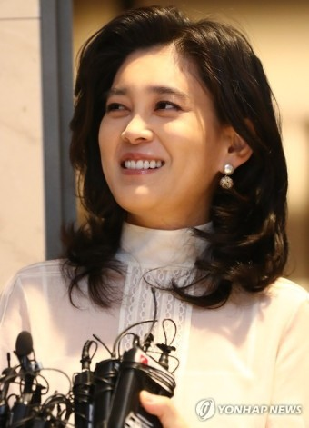

인물백과
- 이건희
- 이재용
- 이부진
이부진
이부진(李富眞, 1970년 10월 6일 ~ )은 대한민국의 기업인이다. 삼성전자 이건희 회장의 장녀이며, 오빠는 삼성전자 부회장 이재용이다. 1995년 삼성 사원으로 입사했고, 2010년 호텔신라 사장에 올랐다

학력
- 1983년 경기초등학교 졸업
- 1986년 예원학교 졸업
- 1989년 대원외국어고등학교 졸업
- 1993년 연세대학교 아동학과 학사
경력
삼성
- 1995년 : 삼성복지재단 사원 입사
- 2009년 9월 ~ 2010년 12월 : 삼성에버랜드 경영전략담당 전무
- 2010년 12월 : 삼성물산 상사부문 고문
- 2010년 12월 : 삼성에버랜드 경영전략담당 사장
- 2015년 9월 : 삼성물산 리조트부문 경영전략담당 사장